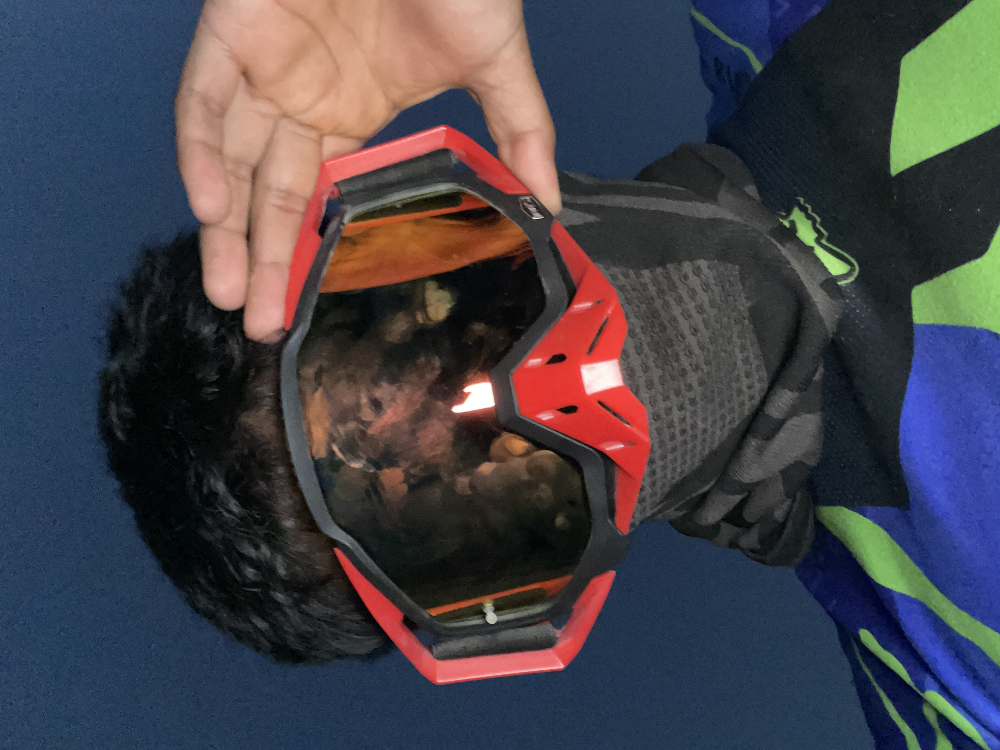
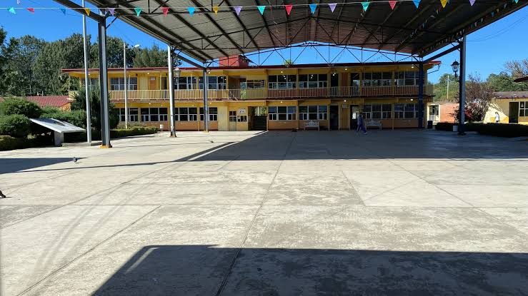
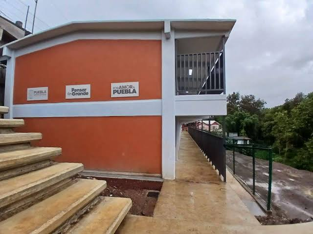

🎂 Edad
19 años

Emprendedor digital · Apasionado por el fútbol, los negocios y ayudar a las personas
"Todo pasa por algo."
Me apasiona el fútbol, emprender y ayudar a las demás personas.
ConócemeTengo 19 años y estudio Desarrollo de Software Multiplataforma. Me considero una persona emprendedora, con ganas de aprender, crear proyectos y convertir mis ideas en oportunidades reales.
El fútbol es una de mis grandes pasiones. También disfruto salir de ruta en moto, escalar cerros y practicar senderismo, porque me gusta conocer lugares y vivir nuevas aventuras.
Me apasiona el fútbol y quiero llegar a ser maestro de fútbol. También me gusta emprender, aprender cosas nuevas y ayudar a las demás personas a crecer y cumplir sus metas.
19 años
Necaxa, Puebla
Emprendedor digital · Apasionado por el fútbol y el emprendimiento
Fútbol, tecnología, emprendimiento y aventura
Cada etapa me ha dejado aprendizajes, experiencias y logros.
📍 Necaxa, Puebla
📍 Ubicación
Abrir mapa ↗📍 Necaxa, Puebla

📍 Ubicación
Abrir mapa ↗📍 Necaxa, Juan Galindo, Puebla

📍 Ubicación
Abrir mapa ↗📍 Xicotepec de Juárez, Puebla
📍 Ubicación
Abrir mapa ↗Durante la Unidad I comencé a desarrollar habilidades para crear páginas web y organizar mis proyectos.
Aprendí a organizar el contenido de una página web.
Aprendí a mejorar la apariencia de una página web.
Conocí cómo agregar interactividad a una página.
Comencé a practicar el control de versiones.
Interestelar

DTMF
Si tu navegador bloquea la reproducción automática, toca reproducir.
Padre rico, padre pobre
📄 Abrir libro (PDF)Tráiler de Interestelar
Una de mis películas favoritas por su historia sobre el espacio, el tiempo y la familia.
Mi canción favorita: DTMF
Mi audio
Padre rico, padre pobre
Me interesa por sus ideas sobre educación financiera, mentalidad y emprendimiento.
El archivo PDF se muestra para consulta personal.
Puedes encontrarme en: